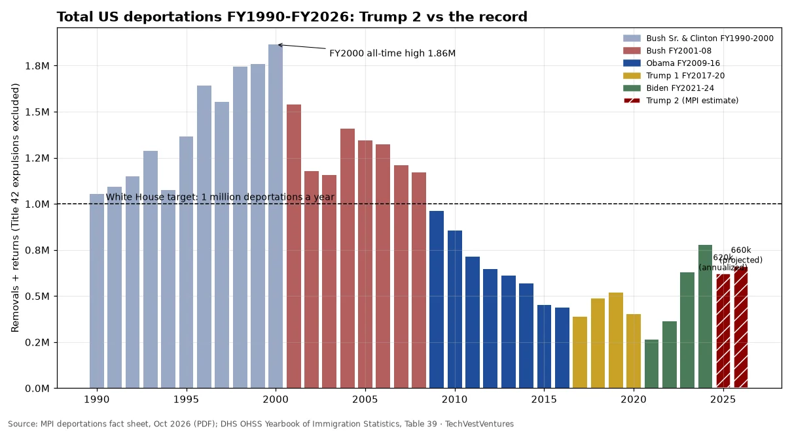

Q7. Totals since 1990

First full outside estimate of second-term deportations (Migration Policy Institute fact sheet by Marc Rosenblum, Oct 2026): about 980,000 removals and returns from Jan 20, 2025 to Jul 31, 2026, or 620,000 annualized for FY2025 and a projected 660,000 for FY2026. That is 26% above the FY2021-24 average and 42% above FY2017-20, but only about a third of the FY2000 peak of 1.86 million (mostly voluntary returns rather than formal removals, per the DHS Yearbook) and well below the 1-million-a-year target. Same definitions throughout: removals plus returns, Title 42 expulsions excluded. Controversy: DHS itself has posted inconsistent totals (845,931 announced by Secretary Mullin on Jul 17, 2026 vs 'over 985,000' as of Jul 12 in a DHS statement), and, per MPI, DHS's statistics office released its last detailed monthly enforcement report in January 2025.
Sources: MPI deportations fact sheet, Oct 2026 (PDF) DHS OHSS Yearbook of Immigration Statistics, Table 39